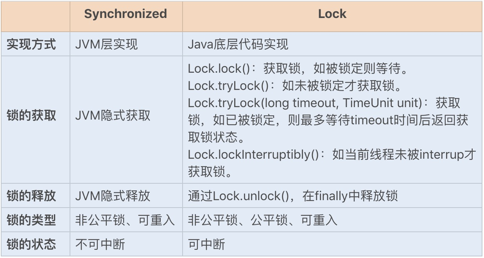
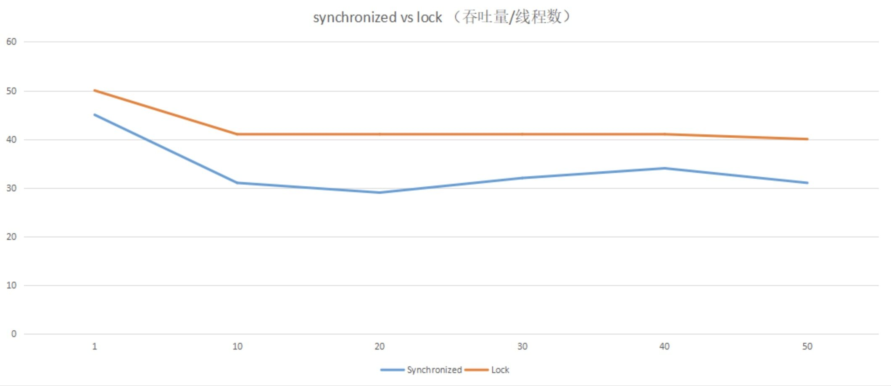
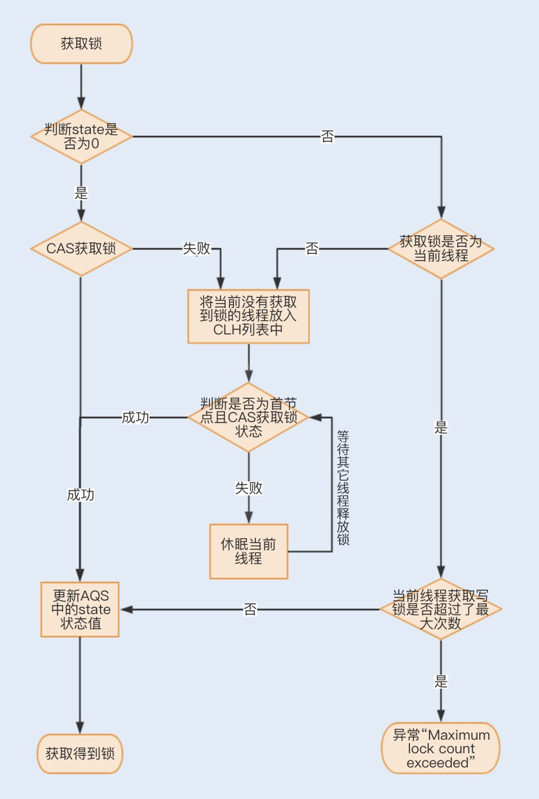
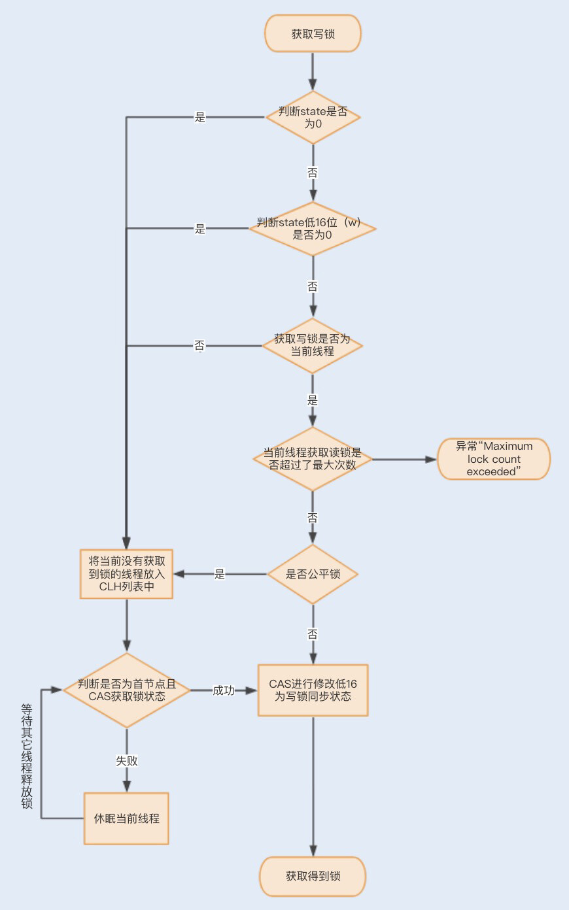
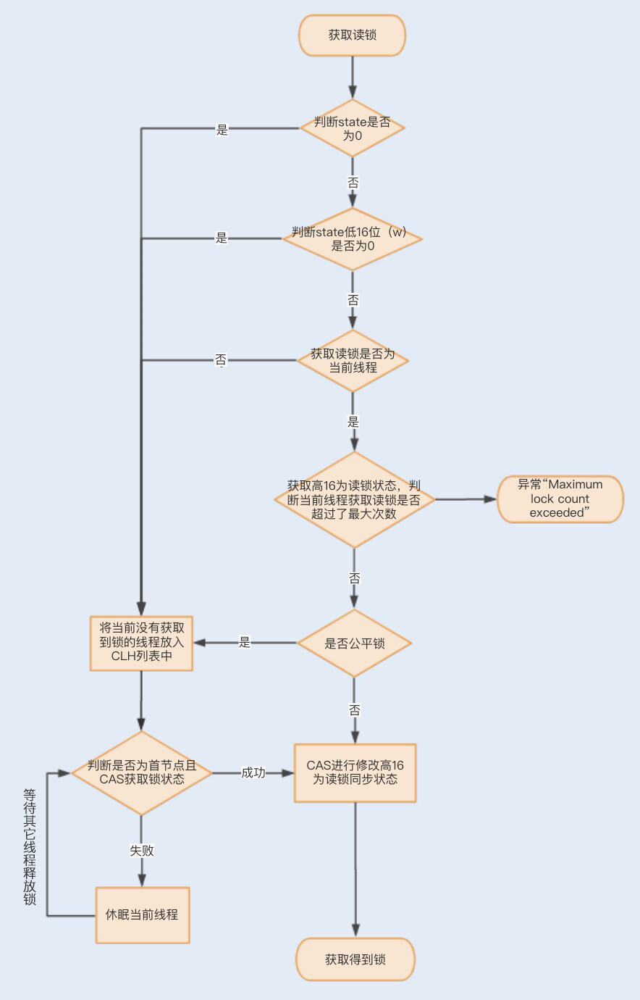

- 00 开篇词你为什么需要学习并发编程？.md.html
- 01 如何制定性能调优标准？.md.html
- 02 如何制定性能调优策略？.md.html
- 03 字符串性能优化不容小觑，百M内存轻松存储几十G数据.md.html
- 04 慎重使用正则表达式.md.html
- 05 ArrayList还是LinkedList？使用不当性能差千倍.md.html
- 06 Stream如何提高遍历集合效率？.md.html
- 07 深入浅出HashMap的设计与优化.md.html
- 08 网络通信优化之IO模型：如何解决高并发下IO瓶颈？.md.html
- 09 网络通信优化之序列化：避免使用Java序列化.md.html
- 10 网络通信优化之通信协议：如何优化RPC网络通信？.md.html
- 11 答疑课堂：深入了解NIO的优化实现原理.md.html
- 12 多线程之锁优化（上）：深入了解Synchronized同步锁的优化方法.md.html
- 13 多线程之锁优化（中）：深入了解Lock同步锁的优化方法.md.html
- 14 多线程之锁优化（下）：使用乐观锁优化并行操作.md.html
- 15 多线程调优（上）：哪些操作导致了上下文切换？.md.html
- 16 多线程调优（下）：如何优化多线程上下文切换？.md.html
- 17 并发容器的使用：识别不同场景下最优容器.md.html
- 18 如何设置线程池大小？.md.html
- 19 如何用协程来优化多线程业务？.md.html
- 20 磨刀不误砍柴工：欲知JVM调优先了解JVM内存模型.md.html
- 21 深入JVM即时编译器JIT，优化Java编译.md.html
- 22 如何优化垃圾回收机制？.md.html
- 23 如何优化JVM内存分配？.md.html
- 24 内存持续上升，我该如何排查问题？.md.html
- 25 答疑课堂：模块四热点问题解答.md.html
- 26 单例模式：如何创建单一对象优化系统性能？.md.html
- 27 原型模式与享元模式：提升系统性能的利器.md.html
- 28 如何使用设计模式优化并发编程？.md.html
- 29 生产者消费者模式：电商库存设计优化.md.html
- 30 装饰器模式：如何优化电商系统中复杂的商品价格策略？.md.html
- 31 答疑课堂：模块五思考题集锦.md.html
- 32 MySQL调优之SQL语句：如何写出高性能SQL语句？.md.html
- 33 MySQL调优之事务：高并发场景下的数据库事务调优.md.html
- 34 MySQL调优之索引：索引的失效与优化.md.html
- 35 记一次线上SQL死锁事故：如何避免死锁？.md.html
- 36 什么时候需要分表分库？.md.html
- 37 电商系统表设计优化案例分析.md.html
- 38 数据库参数设置优化，失之毫厘差之千里.md.html
- 39 答疑课堂：MySQL中InnoDB的知识点串讲.md.html
- 41 如何设计更优的分布式锁？.md.html
- 42 电商系统的分布式事务调优.md.html
- 43 如何使用缓存优化系统性能？.md.html
- 44 记一次双十一抢购性能瓶颈调优.md.html
- 加餐 什么是数据的强、弱一致性？.md.html
- 加餐 推荐几款常用的性能测试工具.md.html
- 答疑课堂：模块三热点问题解答.md.html
- 结束语 栉风沐雨，砥砺前行！.md.html
13 多线程之锁优化（中）：深入了解Lock同步锁的优化方法
你好，我是刘超。
今天这讲我们继续来聊聊锁优化。上一讲我重点介绍了在 JVM 层实现的 Synchronized 同步锁的优化方法，除此之外，在 JDK1.5 之后，Java 还提供了 Lock 同步锁。那么它有什么优势呢？
相对于需要 JVM 隐式获取和释放锁的 Synchronized 同步锁，Lock 同步锁（以下简称 Lock 锁）需要的是显示获取和释放锁，这就为获取和释放锁提供了更多的灵活性。Lock 锁的基本操作是通过乐观锁来实现的，但由于 Lock 锁也会在阻塞时被挂起，因此它依然属于悲观锁。我们可以通过一张图来简单对比下两个同步锁，了解下各自的特点：

从性能方面上来说，在并发量不高、竞争不激烈的情况下，Synchronized 同步锁由于具有分级锁的优势，性能上与 Lock 锁差不多；但在高负载、高并发的情况下，Synchronized 同步锁由于竞争激烈会升级到重量级锁，性能则没有 Lock 锁稳定。
我们可以通过一组简单的性能测试，直观地对比下两种锁的性能，结果见下方，代码可以在Github上下载查看。

通过以上数据，我们可以发现：Lock 锁的性能相对来说更加稳定。那它与上一讲的 Synchronized 同步锁相比，实现原理又是怎样的呢？
Lock 锁的实现原理
Lock 锁是基于 Java 实现的锁，Lock 是一个接口类，常用的实现类有 ReentrantLock、ReentrantReadWriteLock（RRW），它们都是依赖 AbstractQueuedSynchronizer（AQS）类实现的。
AQS 类结构中包含一个基于链表实现的等待队列（CLH 队列），用于存储所有阻塞的线程，AQS 中还有一个 state 变量，该变量对 ReentrantLock 来说表示加锁状态。
该队列的操作均通过 CAS 操作实现，我们可以通过一张图来看下整个获取锁的流程。

锁分离优化 Lock 同步锁
虽然 Lock 锁的性能稳定，但也并不是所有的场景下都默认使用 ReentrantLock 独占锁来实现线程同步。
我们知道，对于同一份数据进行读写，如果一个线程在读数据，而另一个线程在写数据，那么读到的数据和最终的数据就会不一致；如果一个线程在写数据，而另一个线程也在写数据，那么线程前后看到的数据也会不一致。这个时候我们可以在读写方法中加入互斥锁，来保证任何时候只能有一个线程进行读或写操作。
在大部分业务场景中，读业务操作要远远大于写业务操作。而在多线程编程中，读操作并不会修改共享资源的数据，如果多个线程仅仅是读取共享资源，那么这种情况下其实没有必要对资源进行加锁。如果使用互斥锁，反倒会影响业务的并发性能，那么在这种场景下，有没有什么办法可以优化下锁的实现方式呢？
1. 读写锁 ReentrantReadWriteLock
针对这种读多写少的场景，Java 提供了另外一个实现 Lock 接口的读写锁 RRW。我们已知 ReentrantLock 是一个独占锁，同一时间只允许一个线程访问，而 RRW 允许多个读线程同时访问，但不允许写线程和读线程、写线程和写线程同时访问。读写锁内部维护了两个锁，一个是用于读操作的 ReadLock，一个是用于写操作的 WriteLock。
那读写锁又是如何实现锁分离来保证共享资源的原子性呢？
RRW 也是基于 AQS 实现的，它的自定义同步器（继承 AQS）需要在同步状态 state 上维护多个读线程和一个写线程的状态，该状态的设计成为实现读写锁的关键。RRW 很好地使用了高低位，来实现一个整型控制两种状态的功能，读写锁将变量切分成了两个部分，高 16 位表示读，低 16 位表示写。
**一个线程尝试获取写锁时，**会先判断同步状态 state 是否为 0。如果 state 等于 0，说明暂时没有其它线程获取锁；如果 state 不等于 0，则说明有其它线程获取了锁。
此时再判断同步状态 state 的低 16 位（w）是否为 0，如果 w 为 0，则说明其它线程获取了读锁，此时进入 CLH 队列进行阻塞等待；如果 w 不为 0，则说明其它线程获取了写锁，此时要判断获取了写锁的是不是当前线程，若不是就进入 CLH 队列进行阻塞等待；若是，就应该判断当前线程获取写锁是否超过了最大次数，若超过，抛异常，反之更新同步状态。

**一个线程尝试获取读锁时，**同样会先判断同步状态 state 是否为 0。如果 state 等于 0，说明暂时没有其它线程获取锁，此时判断是否需要阻塞，如果需要阻塞，则进入 CLH 队列进行阻塞等待；如果不需要阻塞，则 CAS 更新同步状态为读状态。
如果 state 不等于 0，会判断同步状态低 16 位，如果存在写锁，则获取读锁失败，进入 CLH 阻塞队列；反之，判断当前线程是否应该被阻塞，如果不应该阻塞则尝试 CAS 同步状态，获取成功更新同步锁为读状态。

下面我们通过一个求平方的例子，来感受下 RRW 的实现，代码如下：
public class TestRTTLock {
private double x, y;
private ReentrantReadWriteLock lock = new ReentrantReadWriteLock();
// 读锁
private Lock readLock = lock.readLock();
// 写锁
private Lock writeLock = lock.writeLock();
public double read() {
// 获取读锁
readLock.lock();
try {
return Math.sqrt(x * x + y * y);
} finally {
// 释放读锁
readLock.unlock();
}
}
public void move(double deltaX, double deltaY) {
// 获取写锁
writeLock.lock();
try {
x += deltaX;
y += deltaY;
} finally {
// 释放写锁
writeLock.unlock();
}
}
}
2. 读写锁再优化之 StampedLock
RRW 被很好地应用在了读大于写的并发场景中，然而 RRW 在性能上还有可提升的空间。在读取很多、写入很少的情况下，RRW 会使写入线程遭遇饥饿（Starvation）问题，也就是说写入线程会因迟迟无法竞争到锁而一直处于等待状态。
在 JDK1.8 中，Java 提供了 StampedLock 类解决了这个问题。StampedLock 不是基于 AQS 实现的，但实现的原理和 AQS 是一样的，都是基于队列和锁状态实现的。与 RRW 不一样的是，StampedLock 控制锁有三种模式: 写、悲观读以及乐观读，并且 StampedLock 在获取锁时会返回一个票据 stamp，获取的 stamp 除了在释放锁时需要校验，在乐观读模式下，stamp 还会作为读取共享资源后的二次校验，后面我会讲解 stamp 的工作原理。
我们先通过一个官方的例子来了解下 StampedLock 是如何使用的，代码如下：
public class Point {
private double x, y;
private final StampedLock s1 = new StampedLock();
void move(double deltaX, double deltaY) {
// 获取写锁
long stamp = s1.writeLock();
try {
x += deltaX;
y += deltaY;
} finally {
// 释放写锁
s1.unlockWrite(stamp);
}
}
double distanceFormOrigin() {
// 乐观读操作
long stamp = s1.tryOptimisticRead();
// 拷贝变量
double currentX = x, currentY = y;
// 判断读期间是否有写操作
if (!s1.validate(stamp)) {
// 升级为悲观读
stamp = s1.readLock();
try {
currentX = x;
currentY = y;
} finally {
s1.unlockRead(stamp);
}
}
return Math.sqrt(currentX * currentX + currentY * currentY);
}
}
我们可以发现：一个写线程获取写锁的过程中，首先是通过 WriteLock 获取一个票据 stamp，WriteLock 是一个独占锁，同时只有一个线程可以获取该锁，当一个线程获取该锁后，其它请求的线程必须等待，当没有线程持有读锁或者写锁的时候才可以获取到该锁。请求该锁成功后会返回一个 stamp 票据变量，用来表示该锁的版本，当释放该锁的时候，需要 unlockWrite 并传递参数 stamp。
接下来就是一个读线程获取锁的过程。首先线程会通过乐观锁 tryOptimisticRead 操作获取票据 stamp ，如果当前没有线程持有写锁，则返回一个非 0 的 stamp 版本信息。线程获取该 stamp 后，将会拷贝一份共享资源到方法栈，在这之前具体的操作都是基于方法栈的拷贝数据。
之后方法还需要调用 validate，验证之前调用 tryOptimisticRead 返回的 stamp 在当前是否有其它线程持有了写锁，如果是，那么 validate 会返回 0，升级为悲观锁；否则就可以使用该 stamp 版本的锁对数据进行操作。
相比于 RRW，StampedLock 获取读锁只是使用与或操作进行检验，不涉及 CAS 操作，即使第一次乐观锁获取失败，也会马上升级至悲观锁，这样就可以避免一直进行 CAS 操作带来的 CPU 占用性能的问题，因此 StampedLock 的效率更高。
总结
不管使用 Synchronized 同步锁还是 Lock 同步锁，只要存在锁竞争就会产生线程阻塞，从而导致线程之间的频繁切换，最终增加性能消耗。因此，如何降低锁竞争，就成为了优化锁的关键。
在 Synchronized 同步锁中，我们了解了可以通过减小锁粒度、减少锁占用时间来降低锁的竞争。在这一讲中，我们知道可以利用 Lock 锁的灵活性，通过锁分离的方式来降低锁竞争。
Lock 锁实现了读写锁分离来优化读大于写的场景，从普通的 RRW 实现到读锁和写锁，到 StampedLock 实现了乐观读锁、悲观读锁和写锁，都是为了降低锁的竞争，促使系统的并发性能达到最佳。
思考题
StampedLock 同 RRW 一样，都适用于读大于写操作的场景，StampedLock 青出于蓝结果却不好说，毕竟 RRW 还在被广泛应用，就说明它还有 StampedLock 无法替代的优势。你知道 StampedLock 没有被广泛应用的原因吗？或者说它还存在哪些缺陷导致没有被广泛应用。